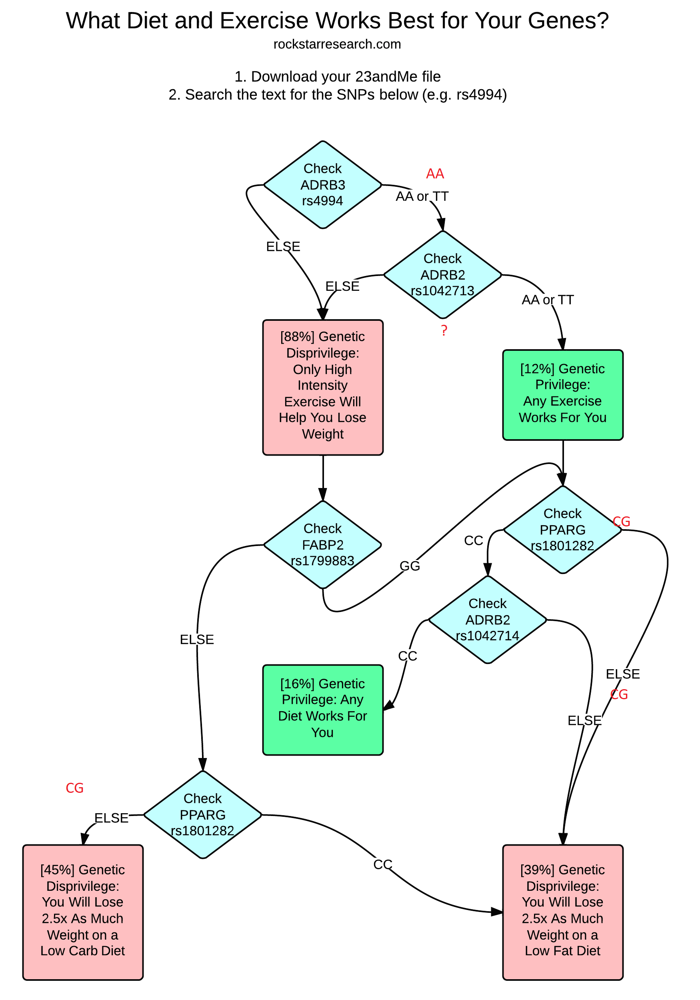
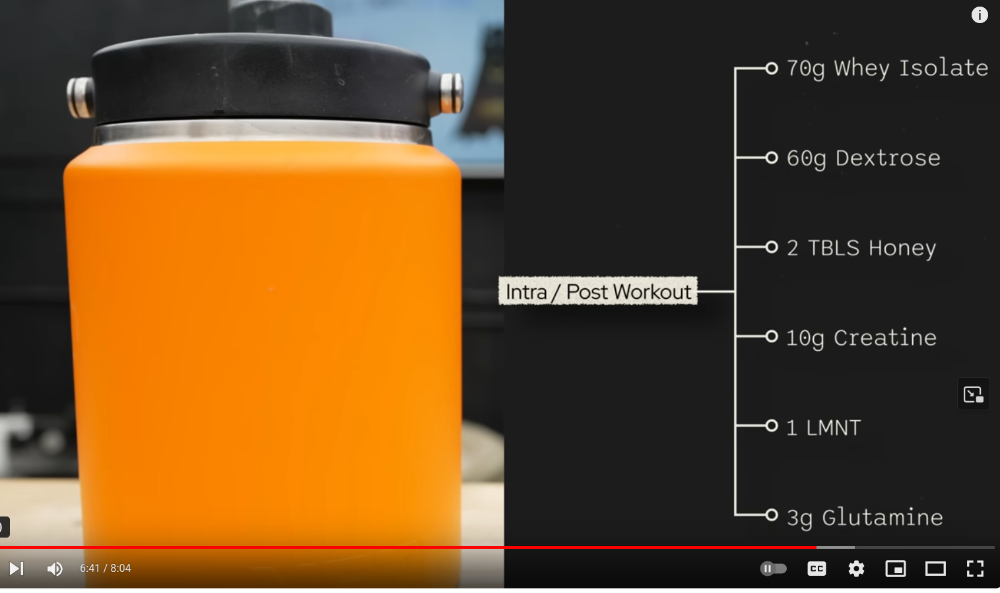

Module 37: Longevity Culinary Engine — Restorative Broth, Collagen Mugcake, Powder Smoothie & RS3 Starch
1. The Nutritional Longevity Philosophy: Precision Fueling & Substrate Shunting
The Version 5.0 architecture decouples nutritional delivery into targeted biochemical vehicles. Rather than haphazardly mixing compounds or consuming unpalatable raw powders in water, the protocol integrates specific functional food matrices designed to maximize pharmacokinetics, prevent metabolic interference (e.g., the Randle cycle), and achieve high daily adherence:
- The Connective Tissue & Tendon Loading Window: Hydrolyzed collagen paired with liposomal vitamin C in a warm broth matrix to optimize prolyl and lysyl hydroxylase activity prior to mechanical loading.
- The Nocturnal Proteostasis & Satiety Vehicle: A rapid 60-second collagen/casein microwave mugcake delivering continuous nighttime glycine and amino acids for tissue remodeling without glycemic disruption.
- The "One Smoothie Per Day" Powder Delivery Vehicle: A strictly carbohydrate-only, fat-free wild blueberry base engineered to transport high-dose bioactive powders (chondroitin, amla, taurine, glycine, greens, Agaricus blazei, creatine) with rapid gastric transit and zero fatty acid competition.
- The High-Pressure RS3 Retrogradation Starch Shunt: High-pressure gelatinization followed by cold recrystallization, transforming digestible carbohydrates into non-digestible butyrogenic fuel for colonic commensals.
2. Recipe 1: Restorative Longevity Broth Drink (Pre-Workout or AM)
Clinical Rationale & Biochemical Mechanism
Tendon, ligament, and articular cartilage tissues are predominantly avascular and rely on passive fluid diffusion during mechanical loading for nutrient transport. Ingesting 15 g of hydrolyzed collagen peptides 30 to 60 minutes prior to tendon loading (or during the morning fasted state) produces an acute peak in circulating plasma glycine, proline, hydroxyproline, and hydroxylysine (Baar et al., Am J Clin Nutr 2017).
Crucially, prolyl 4-hydroxylase and lysyl hydroxylase—the two iron-dependent dioxygenase enzymes responsible for stabilizing the collagen triple helix—strictly require L-Ascorbate (Vitamin C) as an essential single-electron donor to keep active-site iron in the catalytically active \text{Fe}^{2+} state. Ingesting liposomal vitamin C alongside the broth ensures immediate substrate availability at the moment of mechanical strain.
Ingredients & Preparation
- 15 g Hydrolyzed Collagen Peptides (Type I & III, pasture-raised bovine or marine).
- 200–500 mg High-Molecular-Weight Hyaluronic Acid (HMW-HA): Soluble linear glycosaminoglycan that binds to aggrecan and CD44 in cartilage and intervertebral discs, stimulating endogenous synoviocyte HA synthesis and retaining axial disc hydration.
- 12–16 oz Warm Broth Base:
- High-quality commercial or homemade bone/cartilage stock, OR
- 1–2 tsp concentrated savory base (e.g., Better Than Bouillon* Organic Roasted Chicken or Beef base dissolved in hot RO water).
- Electrolyte Salt: 1/4 to 1/2 tsp unrefined mineral salt (Redmond Real Salt or Celtic sea salt) supplying sodium and trace minerals.
- Obligate Co-Factor: 500–1,000 mg Liposomal Vitamin C (taken as liquid or capsule immediately alongside the warm broth drink).
- Gut-Liver IAP Co-Factor: 15–20 mg Zinc Carnosine (acts as an Intestinal Alkaline Phosphatase inducer to dephosphorylate luminal endotoxin/LPS).
- Optional Enhancers: Pinch of ground black pepper, 1/4 tsp turmeric, or a thin slice of fresh ginger.
Instructions
- Heat 12–16 oz of purified RO water to approximately $65\text{--}75^\circ\text{C}
($150\text{--}165^\circ\text{F}). - Dissolve the bouillon or bone broth concentrate thoroughly with a spoon or handheld milk frother.
- Whisk in the 15 g of hydrolyzed collagen powder until completely clear and dissolved (collagen peptides dissolve effortlessly in warm liquids without clumping or altering texture).
- Consume warm 30–60 minutes prior to training (Phase C) or as a grounding morning ritual (Phase A), taking the liposomal vitamin C concurrently.
3. Recipe 2: Evening Collagen Microwave Cake (Mugcake)
Clinical Rationale & Biochemical Mechanism
Sleep architecture depends heavily on central core body cooling and inhibitory neurotransmission. Humans synthesize only \sim 3\text{ g/day} of glycine endogenously, yet optimal collagen turnover, glutathione synthesis, and SCN NMDA receptor thermolytic cooling demand \ge 12\text{--}15\text{ g/day}. The Evening Collagen Microwave Cake provides a low-calorie, non-glycemic, highly satiating evening vehicle that fulfills nocturnal amino acid requirements without elevating circulating blood glucose or suppressing growth hormone secretagogue pulses.
Ingredients & Exact Specs
- Protein Base:
- 15–20 g Hydrolyzed Collagen Peptides (unflavored or chocolate)
- 10–15 g Micellar Casein or Whole Egg / Egg White (provides structural matrix and sustained amino acid release).
- Non-Glycemic Flour / Binder: 1 tablespoon (approx. 7–10 g) Coconut Flour or Oat Fiber.
- Liquid Matrix: 3–4 tablespoons (approx. 45–60 mL) unsweetened almond milk, macadamia milk, or water.
- Flavor & Epigenetic Compounds:
- 1 tablespoon (5 g) Raw Organic Cacao Powder (high flavanols / epicatechin for endothelial NO).
- 1/2 tsp Ceylon Cinnamon (sensitizes GLUT4 and suppresses nocturnal glucose spikes).
- Splash of pure vanilla extract.
- Sweetener: Pure Stevia, Monk Fruit, or 1–2 tsp Allulose (which suppresses SGLT1 glucose uptake).
- Leavening Agent: 1/4 tsp baking powder.
Instructions
- In a standard ceramic coffee mug or small microwave-safe glass bowl, whisk the dry ingredients together (collagen, casein/egg powder, coconut flour, cacao, cinnamon, baking powder, sweetener).
- Add the liquid (and whole egg/egg white if using fresh egg) and stir vigorously with a small fork until a smooth, thick batter forms (similar to brownie batter).
- Microwave on HIGH for 50 to 70 seconds (depending on microwave wattage). The mugcake will rise rapidly and set into a moist, spongy, cake-like texture. Do not overcook to avoid drying out.
- Consume warm at 20:45–21:15 (Phase D), delivering sustained nocturnal glycine and satiety before applying mouth tape.
4. Recipe 3: "One Smoothie Per Day" — The Carb-Only Powder Delivery Vehicle
Clinical Rationale: Why Carb-Only (No Fats, Low Protein)?
Co-ingesting high-fat lipids with carbohydrates triggers the Randle Cycle (glucose-fatty acid cycle), causing delayed gastric emptying, competitive inhibition of substrate oxidation, and prolonged postprandial lipemia. Furthermore, consuming bitter, insoluble, or hygroscopic powders suspended in water leads to chronic compliance failure.
The "One Smoothie Per Day" vehicle is formulated strictly as a carbohydrate- and polyphenol-dense whole-fruit matrix:
* Fast gastric emptying ensures rapid, complete absorption of free-form powders.
* Anthocyanins and pterostilbenes from wild blueberries protect the vascular endothelium and cross the blood-brain barrier.
Glycine provides natural sweetness, neutralizing the earthiness of greens and the bitterness of Agaricus blazei*.
The Master Formulation & Powder Payload
┌─────────────────────────────────────────────────────────────────────────────┐
│ 🫐 BASE CARRIER (Carb-Only / Low-Fat / Fast Gastric Transit) │
├─────────────────────────────────────────────────────────────────────────────┤
│ • 1.0 to 1.5 cups Frozen Wild Blueberries (high anthocyanin density) │
│ • 10–12 oz Cold Purified Water or Coconut Water (potassium electrolyte) │
│ • 3–5 Ice cubes │
│ • Fresh juice of 1/2 Lemon (citric acid enhances mineral solubility) │
├─────────────────────────────────────────────────────────────────────────────┤
│ 🧪 THE POWDER PAYLOAD │
├─────────────────────────────────────────────────────────────────────────────┤
│ 1. Chondroitin Sulfate: 1,200 mg (Extracellular matrix / CD44 signaling) │
│ 2. Cyanidin / Anthocyanin Extract: 300–330 mg active (SIRT6 & Macrophage LXRα)│
│ 3. Organic Amla Powder: 2.0–3.0 g (Emblicanin / lipid peroxidation shield) │
│ 4. Taurine Powder: 2.0–3.0 g (mt-tRNA wobble U34 & neutrophil HOCl trap) │
│ 5. Pure Glycine Powder: 5.0–10.0 g (Sweetening agent / collagen precursor) │
│ 6. Pure N-Acetylcysteine (NAC): 1,000 mg (Glycine + NAC = GlyNAC Engine) │
│ 7. Super-Greens Powder: 5.0–10.0 g (Spirulina / Chlorella / phytonutrients) │
│ 8. Agaricus blazei Extract: 500–1,000 mg (Beta-1,3/1,6-glucan Dectin-1) │
│ 9. Creatine Monohydrate: 5.0 g (Module 35: PEMT SAMe sparing) │
└─────────────────────────────────────────────────────────────────────────────┘
The Anti-Glycation Mandate: Why Chondroitin Sulfate is Selected and Glucosamine is Strictly Excluded
A foundational principle of the Kenaley Architecture (Module 36 & Module 37) is the strict exclusion of oral Glucosamine. While ubiquitous in commercial joint supplements, Glucosamine is an unchelated, open-chain amino monosaccharide (C_6H_{13}NO_5) carrying a reactive free amino group.
- The Hexosamine & Glycation Trap: Free oral glucosamine enters enterocytes and systemic circulation, feeding directly into the hexosamine biosynthetic pathway (HBP). In circulating plasma and interstitial fluid, free amino sugars readily react non-enzymatically with glucose, fructose, and structural proteins via the classical Maillard reaction. This generates highly reactive
\alpha-dicarbonyl intermediates—specifically methylglyoxal (MGO) and 3-deoxyglucosone—which accelerate the irreversible formation of Advanced Glycation End-Products (AGEs) such as glucosepane crosslinks on long-lived articular cartilage collagen, vascular elastin, and basement membranes. - The Chondroitin Solution: Conversely, Chondroitin Sulfate is an already fully polymerized, high-molecular-weight sulfated glycosaminoglycan (
[4\text{-}\beta\text{-D-glucuronosyl-1,4-}\beta\text{-N-acetyl-D-galactosamine-4-sulfate}]_n). Because its reactive hemiacetal/aldehyde carbons are securely locked within rigid\beta\text{-(1}\to\text{3)}and\beta\text{-(1}\to\text{4)}glycosidic bonds, Chondroitin CANNOT participate in open-chain reducing sugar glycation. It safely binds up to 1,000 times its volume in water, provides hydrostatic compressive resilience to cartilage, downregulates catabolic matrix metalloproteinase-13 (MMP-13) and aggrecanase, and suppresses NF-\kappaB inflammatory signaling without any glycation liability.
Cyanidin: Targeted Sirtuin-6 (SIRT6) Allosteric Chromatin Activation
The addition of ~300–330 mg of active Cyanidin (via organic wild blueberries augmented with standardized black rice / Oryza sativa or elderberry extract) provides targeted Sirtuin-6 (SIRT6) allosteric stimulation. SIRT6 is an NAD+-dependent deacylase and mono-ADP-ribosyltransferase localized to chromatin:
* Cyanidin binds directly to an allosteric pocket on SIRT6, accelerating the catalytic deacetylation of histone H3 lysine 9 (H3K9ac) and H3 lysine 56 (H3K56ac).
* This deacetylation condenses telomeric and pericentric heterochromatin, silencing dangerous LINE-1 (L1) retrotransposons that awaken during biological aging to trigger cGAS-STING innate autoimmune inflammation.
* Concurrently, SIRT6 ribosylates and activates PARP-1, dramatically accelerating the repair of DNA double-strand breaks via non-homologous end joining (NHEJ). Delivering this in the wild blueberry smoothie pairs naturally with the endogenous anthocyanin matrix for optimal mucosal uptake.
* Dual Action in the Anti-Glycation Tier ([Module 01](file:///d:/Ryan%20Files%202026/06_Health_and_Wellness/Whitepaper_v4_Rewrite/interventions/01_Acarbose_Starch_Shunting.md)): Beyond chromatin epigenetics, C3G operates at the intestinal brush border to competitively inhibit SGLT1 and GLUT2 transporters, suppressing postprandial glucose surges, blunting glucosepane crosslinking, and shunting carbohydrates downstream.
GlyNAC & Efferocytosis Engine: Neutrophil NET Cleavage & Macrophage LXRα Activation
Beyond sirtuin and anti-glycation mechanisms, the daily smoothie delivers the core components of the Hepatic TRM Resolution and Efferocytosis Stack ([Module 42](file:///d:/Ryan%20Files%202026/06_Health_and_Wellness/Whitepaper_v4_Rewrite/interventions/42_Stem_Cell_Niche_Expansion_Protocol_of_Record.md#L141)):
* The GlyNAC Engine (5–10 g Pure Glycine + 1 g NAC): Replenishes intracellular hepatic glutathione (GSH) depleted by inflammaging, while providing reducing equivalents to chemically reduce and cleave the extracellular DNA-histone-disulfide scaffolds of Neutrophil Extracellular Traps (NETs), protecting hepatocytes from ICAM-1 stress.
* Macrophage LXRα Activation (Cyanidin-3-Glucoside / C3G): Acts as a direct natural ligand for LXRα in hepatic Kupffer cells, driving cholesterol efflux pumps (ABCA1/ABCG1) and upregulating MerTK "eat-me" efferocytic receptors to clear senescent CXCR4hi neutrophils without inducing SREBP-1c hepatic steatosis.
* Taurine Neutrophil HOCl Scavenging (2–3 g Taurine): Scavenges tissue-destroying hypochlorous acid (HOCl) released by neutrophil myeloperoxidase (MPO), forming anti-inflammatory taurine chloramine (TauCl) and stabilizing mitochondrial tRNA translation.
Blending Instructions
- Add the cold water/coconut water and lemon juice to a high-speed blender container.
- Dump in the entire Powder Payload (pre-mixed or added individually).
- Top with the frozen wild blueberries and ice cubes.
- Blend on high for 45–60 seconds until silk-smooth and deep purple.
- Consume in the late morning (09:30–10:30), cleanly delivering your daily powder requirements in a single, delicious 2-minute sitting.
5. Recipe 4: High-Pressure Retrograded Resistant Starch (RS3) Protocol
Food Chemistry: Amylose Gelatinization & Double-Helix Crystallization
Ordinary cooked potatoes, rice, and tubers consist of rapidly digestible starch (RDS) that hydrolyzes into glucose in the upper jejunum within 15–20 minutes, driving acute postprandial glycemic spikes.
Resistant Starch Type 3 (RS3) is formed through the precise thermodynamic cycle of thermal gelatinization followed by low-temperature retrogradation:
1. High-pressure steam disrupts the hydrogen bonds of granular starch, causing complete amylose leaching into solution.
2. Prolonged refrigeration ($4^\circ\text{C}) drives spontaneous reassociation of linear \alpha\text{-(1}\to\text{4)}-D-glucan amylose chains into insoluble, highly organized crystalline double helices.\alpha
3. These crystalline retrograded structures physically block the active site of human pancreatic -amylase and brush-border glucoamylase.
Step-by-Step Culinary Protocol
- Selection: Choose high-amylose cultivars: whole peeled Russet/Yukon Gold potatoes, sweet potatoes, or authentic Jasmine/Basmati white rice.
- High-Pressure Cooking (Instant Pot / Pressure Cooker):
- Potatoes:* Place on steamer rack with 1.5 cups RO water. Pressure cook on HIGH for 10–12 minutes.
- Rice:* Combine 1:1.25 rice-to-water ratio with 1 tsp salt. Pressure cook on HIGH for 3–4 minutes.
- Allow 10 minutes of natural pressure release before venting.
- The 24-Hour Retrogradation Chill:
- Transfer the hot cooked starch immediately into a glass container.
- Seal and store in the refrigerator at $4^\circ\text{C} ($39^\circ\text{F}
) for a minimum of 18 to 24 hours. (Do not skip this step: RS3 crystallization requires sustained low temperatures). - Reheating Guidelines:
- RS3 double helices have a thermal melting temperature (T_m
) between $65^\circ\text{C}and $70^\circ\text{C}. - You may eat the starch cold (e.g., chilled potato salad with EVOO and herbs) OR reheat gently below $60^\circ\text{C} ($140^\circ\text{F}
)in a microwave on 50% power or gently on a stovetop with broth. Never re-bake or boil at high heat.* - The Acarbose Shunt Execution:
- Take 25–50 mg Acarbose (Module 01) with the very first forkful of the starch meal.
- The combination of crystalline RS3 and brush-border enzyme blockade ensures that >60\text{--}75\%$ of the total carbohydrate payload passes into the colon intact, driving massive butyrate synthesis and triggering endogenous L-cell GLP-1 secretion.
Spidered Biological & Protocol Visualizations


